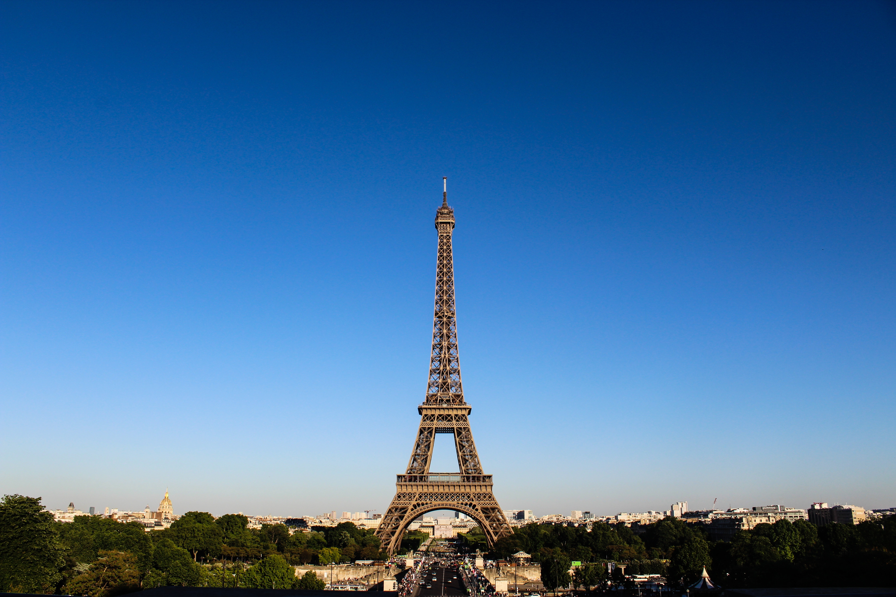

| HOME | ABOUT | DESTINATION | CONTACT US |
|---|
Place of VersaillesThe Palace of Versailles is the former residence of the French monarchs and is famous for its architectural grandeur and its political significance in French history. King Louis XIII built a chateau in Versailles to serve as a hunting lodge in the early 1600s. Later King Louis XIV commissioned this extravagant Palace which took 40 years to complete. Today, this magnificent work is a UNESCO World Heritage site and is one of the most visited attractions in Paris üëàÔ∏èCLICK THE IMAGE FOR MORE DETAILS |
|
|---|---|
Eiffel TowerThe iconic Eiffel Tower is one of the most famous attractions in the world. It is listed as one of the Wonders of the Modern World and has over 7million visitors each year. It was built as a temporary exhibit to commemorate the centenary celebration of the French Revolution but it was never removed. The Tower has three levels, two restaurants, a champagne bar, two observation decks, a garden and the enchanting Esplanade for guests to explore. CLICK THE IMAGE FOR MORE DETAILSüëâÔ∏è |
 |
DisneylandDisneyland Paris is a wonderful magical land where you get to experience fun, entertainment and adventure alongside famous Disney characters, Marvel superheroes and Star Wars legends. Disneyland Paris has two main theme parks - Disneyland Park Paris and Walt Disney Studios Park. Both of these theme parks have various types of rides and attractions that are sure to bring out the child in you. üëàÔ∏èCLICK THE IMAGE FOR MORE DETAILS |
|
Mont Saint-MichelMont Saint-Michel is a sight that will take your breath away. The island in Normandy is topped by a medieval monastery that was once a centre of learning. CLICK THE IMAGE FOR MORE DETAILSüëâÔ∏è |
 |
 |
Louvre MuseumStanding in its grandeur and baroque style construction on the banks of the Seine river in Paris, the Louvre Museum, also called The Great Louvre, is the most-visited museum in the world. Loaded with as many as 35,000 works consisting of numerous artefacts and paintings, the museum displays its majestic collection from ancient civilization to the mid 19th century. üëàÔ∏èCLICK THE IMAGE FOR MORE DETAILS |